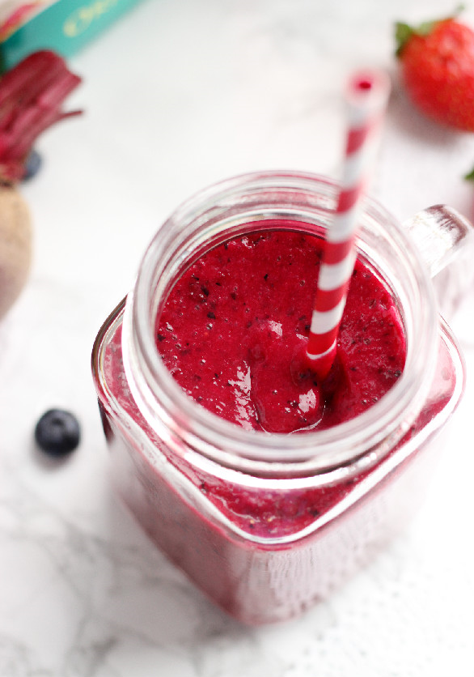

back to Recipes
Smoothie

Description
With this delicious smoothie, you won't be able to suspect or taste anything unusual! The bananas and berries do an excellent job of masking the flavor of the raw grated beet in there; just make sure you pick the ripest ones!
Ingredients
- 1 cup almond milk
- 1 frozen banana, sliced
- 1 small beet, washed, peeled and grated
- 1 cup frozen blueberries (or raspberries)
- 1 cup fresh strawberries
Steps
- Add all ingredients to a blender and blend for 2-3 minutes, or until smooth. Serve immediately. Smoothie will thicken as it stands.
Credit to blog